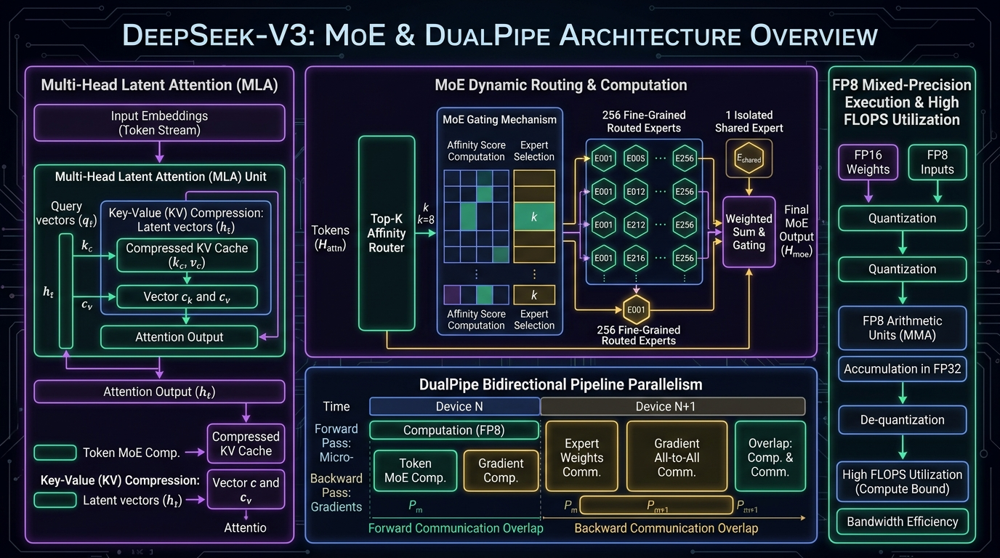

256 Routed Experts
1 Isolated Shared Expert
DualPipe All-to-All Overlap
🎬 3Blue1Brown Manim
DeepSeek-V3 DualPipe & MoE Router Studio
Simulate DeepSeek-V3 fine-grained expert routing (K=8 of 256), Multi-Head Latent Attention (MLA) 14x KV cache compression, and DualPipe bidirectional pipeline parallelism that overlaps computation with communication bubbles.
🏛️ Architecture Flow Diagram

MoE Router Configuration
7168 -> 512 (14.0x compression)
16 Stages (Bidirectional Microbatches)
Expert Affinity Allocation & Pipeline Overlap Pipeline Bubble: < 4.8%
=== DeepSeek-V3 MoE Dynamic Router Initialized ===
[MLA] Input query projected to 512-dim latent space.
[GATING] Selected K=8 experts: [E14, E62, E98, E112, E154, E189, E214, E249]
[DUALPIPE] Overlapping forward compute (12.4ms) with backward gradient All-to-All.
[SHARED] Shared expert #1 executing dense base knowledge path.